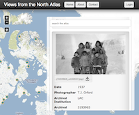

Nunaliit Atlas Framework
The Nunaliit Atlas Framework aims to make it easy to tell stories and highlight relationships between many different forms of information from a variety of sources, using maps as a central way to connect and interact with the data.
The Nunaliit Atlas Framework was born out of a multi-disciplinary research project led by Dr. Fraser Taylor, a Distinguished Research Professor in the department of Geography and Environmental Studies and director of the Geomatics and Cartographic Research Centre at Carleton University in Ottawa, Canada.
Research and development of Nunaliit is carried out and supported by a diverse team of individuals and organizations. We are available to assist with projects.
Nunaliit has been designed to make it relatively simple to create interactive mapping web sites based on your data and multimedia, and to permit web users to contribute additions and changes where permitted. By default, it uses a very flexible document oriented database to store any text-based attributes or data objects.
Altas creators may create a series of "schemas" to help define how to display and input documents that share a common set of attributes including geometries and relationships to other schemas. This flexible system allows for iterative development of functionality as you begin to see patterns in the data. Your editor users can create their own attributes and provide any sort of attachment. As the data evolves, schemas and atlas functionality can be modified to accommodate attributes or attachment types that might not have been originally anticipated.
Documents can have any number of attachments such as zip files, images, videos, office documents, mapping data, etc. Many popular image, video, sound, and location formats can be accepted and converted to web-ready formats by the Nunaliit server-side automatically.
A modern HTML/CSS/JS web client with OpenLayers mapping functionality is served to a user's browser and interacts with the database and a handful of media conversion servlets to permit rich interactivity with the data and editing/uploading of content and map geometries.
Nunaliit has also been designed to support distributed multi-master atlases at remote locations including map-less remote offline use on mobile devices for video, photo, sound, and location recording as well as document, attribute, and schema editing. At the moment, a developer build of an iPad application exists and has been tested in the Yukon and Northwest Territories by a partner group. Efforts are underway to support Android devices as well.
To get started with using Nunaliit, please start reading the documentation on our wiki and then download the latest pre-built binaries from our Maven repository.
Example atlases can be found on the GCRC Atlases page. Note that some of the older atlases are built using a previous iteration of Nunaliit with a very different architecture. A link to the older Nunaliit pages can be found on the GCRC home page.
If you are a software developer or you have been using Nunaliit for a while and want to dig deeper, please visit the Nunaliit project on GitHub to delve into the code, report problems, or suggest enhancements.
As an output of a publicly funded research project, it was important for us to release the Nunaliit code under a license that permits broad adoption of the software and encourages use of the ideas as widely as possible. We have chosen the New BSD License as it permits use, redistribution, and modification by anyone with no obligation to make the modifications available for others. That being said, we expect that individuals and organizations, whether for profit or not, will see the benefits of contributing their effort back to the Nunaliit community.
Please consider including a credit and link to Nunaliit if you use it so that we can grow our community and support. Assets have been developed to help.